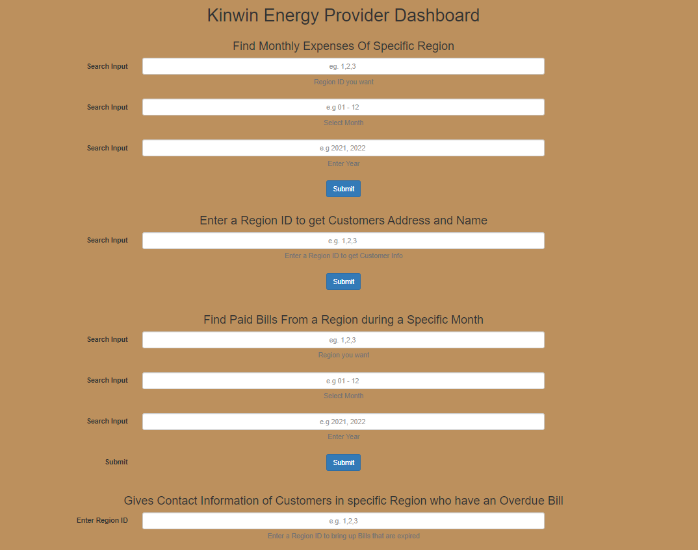

Energy Company Database "Mock"

Purpose and Environment
This project was built with the intention of learning and practicing CRUD operations, database design and structure, the relationships between entities, types of joins between tables, the writing of queries, and connecting a Mysql database to a php server.The code for this project was written in the visual studio code environment, with the front-end stack consisting of HTML, CSS, bootstrap, and a backend of PHP, MySQL, and SQL.

Our Project Consisted of These Main Milestones
- Understand why were building this database.
- POV energy company wanting to track customer information such as address, bills, and outstanding bills.
- Company also needs to keep track of expenses and products .
- Create a model
- Created a UML Diagram.
- Created a Entity Relationship Diagram.
- Create a Schema
- Used MySQL to create our database.
- Wrote python program to populate database tables.
- Write queries with insights.
- Setup a php Server
- Used usbwebserver to host locally.
- Connect database to php server.
- Create Website
- Create forms that can fill in queries
- Used bootstrap to style results